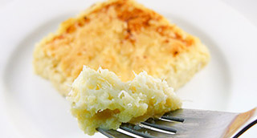

Tosta de Brandada de bacalao, tapenade de arbequinas, allioli y chips de alcachofas frita
"Combinación de texturas, crujientes y cremosas. Y como nexo de unión un allioli muy suave..."

| Pan de molde | 3 un. |
| Tapenade de Arbequinas | 60 gr. |
 |
|
| Bacalao desalado (penca) | 500 gr. |
| Patatas | 500 gr. |
| Aceite de oliva suave | 150 ml. |
|
|
| Yema de huevo | 2 un. |
| Ajos | 1 dt. |
| Aceite de oliva suave | 60 ml. |
| Aceite de girasol | 60 ml. |
| Sal | 1 gr. |
|
|
| Alcachofas | 3 un. |
| Harina | 30 gr. |
| Sal | 1 gr. |
| Aceite para freir | 1 l. |
- Lavar bien el bacalao, secar con papel y retirar la piel.
- Desmigarlo con la mano (esqueixar). Reservar.
- Pelar las patatas, cortarlas a trozos y hervirlas con un poco de sal.
- Una vez cocidas escurrirlas. Mientras...
- Pelar los ajos y laminarlos, colocarlos en una cazuela con el aceite en frío.
- Poner a fuego lento y dejar cocer los ajos y cuando éstos estén dorados y suban a la superficie retirar la cazuela del fuego.
- Retirar las láminas de ajo y añadir el bacalao desmigado.
- Volver a poner a fuego lento y con una cuchara de madera ir montando como si fuera un pil pil.
- Una vez todo bien ligado ponerlo en una ensaladera.
- Añádir a la ensaladera las patatas escurridas, machacar con un tenedor hasta conseguir una masa bien integrada.
- Rectificar de sal y reservar tapado con papel de film.
- Limpiar las alcachofas, retirando las hojas exteriores. Cortarlas finas a cuchillo o con mandolina.
- Colocarlas en un plato, añadir una pizca de sal y dejarlas sudar unos 5'.
- Espolvorear las con harina y freírlas con abundante aceite caliente hasta que estén doradas y crujientes.
- Secar el exceso de aceite sobre papel absorbente y reservar en un lugar seco.
- Montar el allioli en un mortero de la manera tradicional. Reservar.
- Troquelar el pan con la forma del molde en que queramos servir. Tostarlo y reservarlo.
- Untar con la tapenade de arbequinas la tostada de pan. Colocarla en el fondo del molde.
- Rellenar casi hasta arriba con la brandada de bacalao presionando para que no queden espacios vacíos.
- Alisar toda la superficie del molde con el allioli y con la ayuda de una espátula.
- Colocar en el gratinador para que la superficie tome color. También podemos dorarlo con un soplete.
- Una vez dorado colocar en el plato de servir, levantar el molde e incrustar levemente las chips de alcachofas.